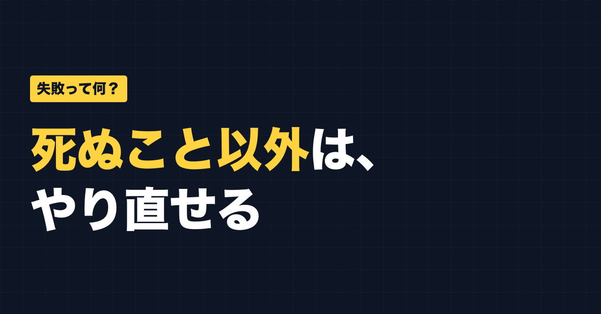
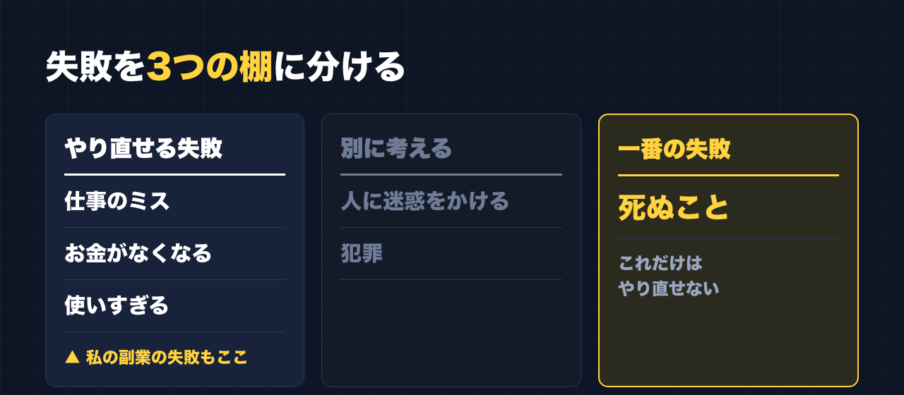

1. タイトルをコピーして、note のタイトル欄に貼る
2. 「本文1をコピー」から順にコピーし、note の本文に貼る
3. 青いラベルの位置に、images フォルダの同じ名前の画像を入れる（本文には貼られません）
※ 見出しが普通の文字になった場合は、その行を選んで「大見出し」を設定してください

「死ぬこと以外は、やり直せる」
仕事で人に教える側に立つとき、私はよくこの話をします。
研修では、失敗談をよく話します。若いころに仕事をなめていた話や、ヒヤリハットの話もします。
そして、そのたびに考えるのが「そもそも失敗って何だろう」ということです。
失敗と聞いて、思い浮かぶもの
失敗と聞いて思い浮かぶのは、たとえばこんなものだと思います。
- 仕事でミスをする
- お金がなくなる
- お金を使いすぎる
どれも、起きたときはつらいです。仕事のミスは、周りに頭を下げることになります。お金がなくなれば、生活が苦しくなります。
でも、これらはどれも、やり直せます。
別に考えるもの：人に迷惑をかけること、犯罪
ひとつだけ、はっきり分けておきたいことがあります。
人に迷惑をかけること、犯罪。これは「やり直せるから大丈夫」の話には入れません。
自分が損をする失敗と、人を傷つけることは、同じ棚に並べるものではないと思っています。
一番の失敗は、死ぬこと
では、一番の失敗は何か。
私は、死ぬことだと思っています。
死んでしまったら、やり直すことができません。逆に言えば、それ以外はやり直せる。
「死ぬこと以外は、やり直せる」は、ここから来ています。

私の副業の失敗
えらそうに書いていますが、私自身の副業は、失敗の連続です。
副業は、「自分が遊ぶお小遣いが欲しい」くらいの気持ちで始めました。最初に入った講座は高額で、約80万円。全然成果が出ませんでした。
それを取り戻そうとして、FX、物販と次々に手を出し、そこでも少しずつお金を払ってきました。FX も物販も、私には合いませんでした。
アフィリエイトで少し売れたことはあります。でも、払ってきたお金は取り戻せていません。
だから、自分ではこう言っています。
「今も成果が出ていないから、これは失敗でしかない」
「失敗は学びだ」ときれいにまとめることもできます。でも、お金が戻っていない以上、私にとってはやっぱり失敗です。
それでも、やり直せる側の失敗
ただ、この失敗は「お金がなくなる」「使いすぎる」の棚に入る失敗です。
つまり、やり直せる側です。
そう考えると、失敗を失敗と認めることと、やめないことは、両立します。
今の私の気持ちは、この一言です。
「継続は力なり。いつか成功すると思っている」
前は「取り返したい」でした。今は「続けていれば、いつか」です。やり方も変えました。帰宅後に1〜2時間やろうとして続かなかったので、今は昼休みや休憩の合間の5分、10分で、やれるときにやっています。
失敗したと思ったときに
最後に、自分に言い聞かせていることを書いておきます。
- それは「やり直せる失敗」か、「人に迷惑をかける・犯罪」か。まず分ける
- やり直せる失敗なら、失敗は失敗と認めていい。無理にいい話にしなくていい
- そのうえで、次の小さい一歩を決める。大きく取り返そうとしない
大きく取り返そうとして、次々にお金を払ったのが私です。やり直すときは、小さく。
最後に
ここからは宣伝です。
公式LINEでは、「特典」と送っていただくと、LINE限定のプロンプト5本をお届けしています。
https://lin.ee/RzyA13P
「副業ドラフト」は、AI の質問に答えるだけで、副業に使える強みの棚卸しと Threads の下書きを作るツールです。Threads の下書き3本までは無料で使えます。
https://note-threadssf.onrender.com
Threads では、こうした試行錯誤を日々発信しています。
https://www.threads.com/@shachiku_mao
最後まで読んでいただき、ありがとうございました。